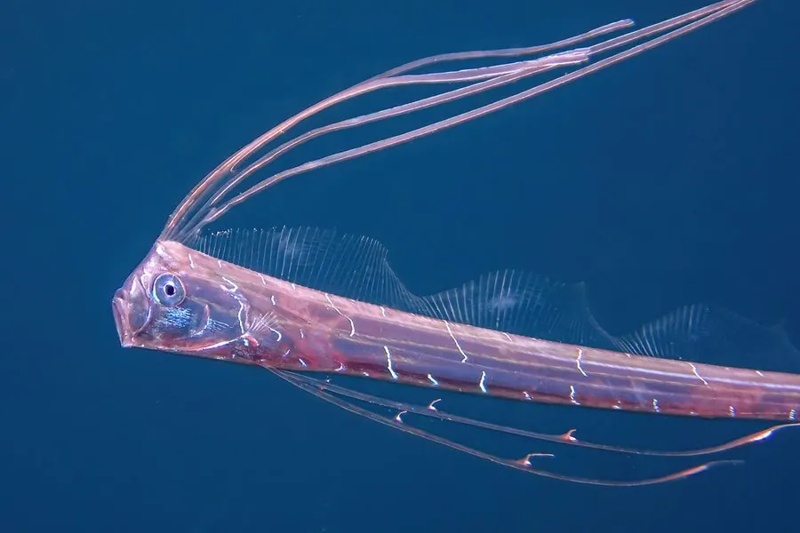

鱼类 · 动物界
皇带鱼 Regalecus glesne

体长可达数米的银白色带状深海鱼，背鳍第一鳍条延长成丝，常被冲上浅滩，是现存最长的硬骨鱼之一。
- 分类
- 门脊索动物门纲硬骨鱼纲目月鱼目科皇带鱼科属皇带鱼属
- 栖息环境
- 温带和热带海域 200–1000 m 的深层水域
- 地理分布
- 全球温带和热带海域，包括太平洋、大西洋和印度洋
- 保护级别
- 暂无评估
物种志
皇带鱼体呈带状，侧扁，体长一般 3–5 m，最大记录超过 8 m，体重可达 270 kg，是现存最长的硬骨鱼之一。体表银白，散布不规则的暗色斑纹；背鳍起点在头顶，第一鳍条延长成丝状，向后延伸；腹鳍也延长成两条细长的鳍丝；没有臀鳍，尾鳍退化。
皇带鱼分布于全球温带和热带海域的深层水域，一般生活在 200–1000 m 的深海，靠身体的波浪式摆动缓慢游动。它以小型鱼类、乌贼和甲壳类为食，头部的丝状鳍条可能用于感知水流和诱集猎物。皇带鱼偶尔会被洋流带到浅海或冲上岸，因此常被误认为“海蛇”。日本民间把它称作“地震鱼”，认为它的出现预示地震，但这一说法没有科学依据。目前皇带鱼没有IUCN 的正式评估，也未列入中国国家重点保护野生动物名录。
形态与习性
- 食性捕食小型鱼类、乌贼和甲壳类
- 体长一般 3–5 m，最大记录超过 8 m
- 外形体呈带状，银白色，背鳍第一鳍条延长成丝
- 栖息深度通常 200–1000 m 的深层水域
- 运动靠身体波浪式摆动缓慢游动
- 误认被冲上岸时常被误认为海蛇
趣味知识
- 皇带鱼是现存最长的硬骨鱼，最长记录超过 8 m。
- 它头顶的背鳍第一鳍条像一根长丝，能在水中飘动。
- 日本民间称它为“地震鱼”，但地震预示之说没有科学依据。